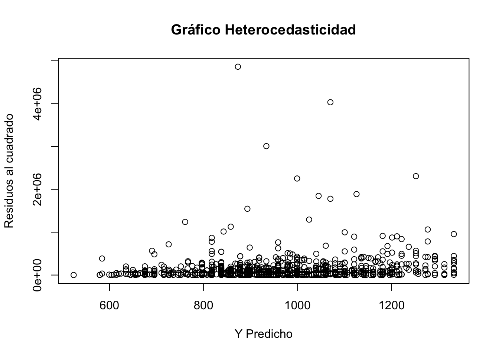
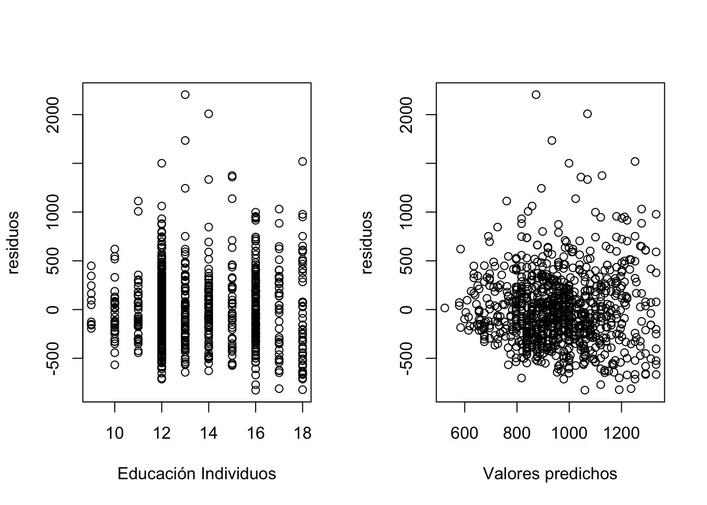

La heterocedasticidad es una característica importante en el análisis de regresión que ocurre cuando la variabilidad de los errores o residuos no es constante a lo largo de las observaciones. Reconocer su presencia es fundamental porque puede afectar la eficiencia y validez de los estimadores en los modelos de regresión, llevando a inferencias estadísticamente incorrectas. Identificar y corregir la heterocedasticidad permite mejorar la precisión de las predicciones y la robustez de los resultados, lo que es clave en la toma de decisiones informadas y confiables en diversos campos como la economía, las finanzas y las ciencias sociales.
Resumen
En esta ocasión se plantea el desarrollo de los test mas importantes en econometría para detectar heterocedasticidad en los modelos que se estiman recurrentemente y por otro lado, se hace la corrección de los problemas de heterocedasticidad a partir de lo sugerido por la literatura económica.
Heterocedasticidad
Un problema de varianza de los residuos del modelo puede llevarnos a estimaciones poco eficientes a pesar de que los estimadores sigan siendo lineales e insesgados.
Esta propiedad se describe como:
\[Var (u|x_{1},x_{1},x_{2},x_{3},\dots,x_{k})=\sigma^{2}\] De la cual, esta condición lo único que intenta decir es que los residuos deben tener una varianza constante sin importar las variaciones de las variables \(x's\).
Pasos para mirar la heterocedasticidad
Para establecer el análisis y realizar seriamente una prueba de esto de debe:
Estimar el modelo y hallar sus residuos y elevarlos al cuadrado.
Realizar un gráfico entre \(u^{2}\) y los valores predichos del modelo \(\widehat{Y}\).
Aplicar cualquiera de los test consecuentes: Goldfeld-Quandt, Breuch-Pagan o White (siendo este último el mas completo).
(Solo si es necesario) Corregir el modelo con errores robustos o incluso MCO ponderado (WLS) o MCO factibles.
Tomemos como ejemplo la base de datos con la que hemos venido trabajando todo el tiempo que se denomina salarios y cuya dependiente nos muestra los retornos en función de variables como la educación (educ), la edad (age) y el hecho de ser una persona Afrodescendiente (black).
# Cargar Base de datoslibrary(readxl)Salarios <-read_excel("Salarios.xlsx")# 1 Estimar modeloreg1<-lm(wage~ educ+ age+ black, data = Salarios)# 2 Guardamos los residuos en la base o data frameSalarios$residuos<-reg1$residualsSalarios$residuos2<-(reg1$residuals)^2Salarios$predichos<-reg1$fitted.values# Análisis Gráficoplot (x=Salarios$predichos, y=Salarios$residuos2, main ="Gráfico Heterocedasticidad", ylab ="Residuos al cuadrado", xlab="Y Predicho" )

Podemos mirarlo también de esta manera:
res <-residuals(reg1)yhat <-fitted(reg1)par(mfrow=c(1,2))plot(Salarios$educ,res, xlab="Educación Individuos", ylab="residuos")plot(yhat,res, xlab="Valores predichos", ylab="residuos")

Incluso si solo queremos una sola gráfica para mirar finalmente el problema:
Si observamos muy bien la figura anterior, vemos que al parecer los residuos cambian ante las variaciones de las variables \(x's\) exogenas del modelo, esto podría indicar algún indicio de que el modelo establecido es heterocedastico o tiene distinta varianza. A continuación hay que implementar los test descritos en clase e incluso realizar regresiones auxiliares entre los residuos y las variables explicativas de los modelos.
Usaremos una primera aproximación sugerida por Park (citado por Wooldridge, 2015). La estimación se hace mediante el modelo de regresión tradicional M.C.O pero utilizando como variable dependiente los residuos al cuadrado. Es importante saber que no tiene sentido realizar o aplicar logaritmo a una variable binaria (dummy) - cuando se tenga dentro de las explicativas - que contiene unos (1) y ceros (0) ya que no existe logaritmo natural de cero.
El modelo a estimar entonces es: \[ln(\mu^{2})=\alpha_{0}+\alpha_{1}Ln(X)+V_{i}\]Donde \(V_i\) es el residuo de ese modelo
# Se estima primero el modeloreg.res<-lm(log(residuos2)~log(educ) +log(age) + black, data =Salarios)# Mostramos resultados con el paquete de stargazerlibrary(stargazer)stargazer(reg.res, type="text", title="Resultado del Modelo",dep.var.labels=c("Residuo al cuadrado"),covariate.labels=c("Educación","Edad","Raza (negro=1)"), single.row=TRUE)
Al parecer la variable educación tiene problemas con la varianza, en la medida que ella cambia también lo hace la varianza de los residuos del modelo original. Lo ideal hubiera sido que ninguna de las variables explicativas que acompañan la explicación de la la variable dependiente fuese significativa. El modelo de Park debe ir siempre en términos logarítmicos.
Tenemos problema de variación y en este caso podemos decir que si hay problemas en la varianza de los residuos del modelo.
Uno de los test mencionado para verificar la Heterocedasticidad en los modelos es la prueba G-Q. Quien toma una parte de los datos (regularmente después de ordenados se toma el centro de los datos) y se establece un grupo de regresiones auxiliares. Esto se puede realizar directamente con el paquete lmtest junto al comando de gqtest.
# Cargamos el paquetelibrary(lmtest)# Con los datos del modelo originalgqtest(reg1, order.by =~educ+ age+ black, data = Salarios, fraction =187)
Goldfeld-Quandt test
data: reg1
GQ = 0.85095, df1 = 370, df2 = 370, p-value = 0.9395
alternative hypothesis: variance increases from segment 1 to 2
Como las observaciones o \(n=935\) la parte donde va fraction es 187, que corresponde casi al 20% que requiere el test de datos de restricción para realizar la separación de grupos.
Note que para esta parte, el test nos dice que no habría problema de heterocedasticidad ya que en este caso la métrica no solo es cercana a uno (diciendo que ambos grupos tienen misma varianza), si no ademas que el P-value permite decir con suficiente confianza que no debe recharzar la hipotesis nula de homocedasticidad, pero recuerde también que este tipo de test depende mucho de las formas funcionales de \(e_i\) o de los residuos del modelo.
Prueba (Test) de White y Breush-Pagan
La prueba de White permite modelar o mejorar las apreciaciones de movimiento de la varianza de los residuos de forma lineal, cuadrática e interactiva entre las variables explicativas, a continuación una referencia del modelo a estimar.
La idea es obtener el estadístico de prueba que en este caso es \(R^{2}\times n\), donde \(R^{2}\) es el coeficiente de determinación y (n) viene siendo el total de observaciones del modelo original. La idea es medir y contrastar que:
\[\begin{aligned}
H_{0}:&\; \sigma^{2}_{i}=\sigma^{2} \quad \forall \; i=1,\dots,n \quad \text{Es Homocedastico} \\
H_{1}:&\; \sigma^{2}_{i}\neq \sigma^{2} \quad \text{Es Heterocedastico}\\
\end{aligned}\] El criterio es NO RECHAZAR la hipótesis nula \(H_{0}\), para eso, se requiere que \(R^{2}\times n< \chi^{2}_{critico}\).
# Prueba de errores de white, de forma manual con las variables:white<-lm(residuos2~ educ+ age+black+I(educ^{2})+I(age^{2})+I(black^(2))+I(educ*age)+I(educ*black)+I(age*black), data = Salarios)summary(white)
Call:
lm(formula = residuos2 ~ educ + age + black + I(educ^{
2
}) + I(age^{
2
}) + I(black^(2)) + I(educ * age) + I(educ * black) + I(age *
black), data = Salarios)
Residuals:
Min 1Q Median 3Q Max
-282512 -113394 -71961 14853 4723908
Coefficients: (1 not defined because of singularities)
Estimate Std. Error t value Pr(>|t|)
(Intercept) 1603725.9 1597394.8 1.004 0.316
educ -34703.4 81060.0 -0.428 0.669
age -84448.5 85338.1 -0.990 0.323
black 22186.9 428606.5 0.052 0.959
I(educ^{\n 2\n}) -785.5 2301.3 -0.341 0.733
I(age^{\n 2\n}) 853.9 1251.5 0.682 0.495
I(black^(2)) NA NA NA NA
I(educ * age) 2251.6 1606.9 1.401 0.161
I(educ * black) -11801.2 18118.6 -0.651 0.515
I(age * black) 2821.1 10062.2 0.280 0.779
Residual standard error: 313100 on 926 degrees of freedom
Multiple R-squared: 0.02165, Adjusted R-squared: 0.01319
F-statistic: 2.561 on 8 and 926 DF, p-value: 0.009156
# Ahora tomamos solo el R2 y multiplicamos por el número de observaciones (n)length(Salarios$residuos)*summary(white)$r.squared
[1] 20.23943
# Estadístico chi-cuadrado al 95% o alpha 5% y df=5 por las var explicativasqchisq(0.95,5)
[1] 11.0705
Note que de lo anterior, se constata que el modelo analizado su Estadístico de White es mayor que el valor critico de la distribución ji-cuadrado \(\chi^{2}\), por ende tenemos el problema de que la varianza no es constante o tengamos heterocedasticidad.
El test de Breusch-Pagan es similar al de White, simplemente que hace uso de las formas lineales (asociaciones) de las variables con respecto a los residuos del modelo.
# install.package("lmtest")library(lmtest)# Para Breusch-Paganbptest(reg1)
studentized Breusch-Pagan test
data: reg1
BP = 17.376, df = 3, p-value = 0.0005914
# Una forma del test de White alternativabptest(reg1,~fitted(reg1)+I(fitted(reg1)^2))
studentized Breusch-Pagan test
data: reg1
BP = 17.465, df = 2, p-value = 0.0001613
Para hacer uso de este test o prueba recuerde que debe tener instalado los paquetes delmtest y adicionalmente el paquete car, con estos podremos implementar las opciones de bptest sobre la regresión original y tener el estadístico correspondiente. Para este caso, nuevamente encontramos que contamos con suficiente evidencia estadística para rechazar la hipótesis de varianza constante y concluir definitivamente que el modelo tiene problemas de heterocedasticidad.
Como corregir la heterocedasticidad
La corrección del problema de heterocedasticidad es recuperar en parte la correcta medida de los errores estándar de los estimadores del modelo, de estas distintas formas y maneras recaerá el intercambio y elección del investigador sobre si prefiere insesgadez o eficiencia, entre mas eficiente quiera los estimadores, estos serán menos insesgados. Existen tres formas de corregir la heterocedasticidad de un modelo y esto es:
Modelo de errores de robustos o de White.
Modelo de Mínimos Cuadrados Generalizado o ponderado (WLS).
Modelo de Mínimos Cuadrados Factibles.
El uso de ellos dependerá de dos consideraciones:
Cuando se conoce la forma funcional de \(\sigma^{2}\).
Cuando se desconoce simplemente asumir o realizar modelos doblemente logarítmicos.
Modelo de errores de robustos o de White.
La corrección de White se emplea de la siguiente forma:
## Correccion de la heterocedasticidad ##library(car)# Se tiene el modelo con sus valores normalescoeftest(reg1)
t test of coefficients:
Estimate Std. Error t value Pr(>|t|)
(Intercept) -434.2398 152.7506 -2.8428 0.00457 **
educ 55.5698 5.6386 9.8553 < 2.2e-16 ***
age 20.1689 3.9232 5.1409 3.333e-07 ***
black -182.6703 37.0325 -4.9327 9.603e-07 ***
---
Signif. codes: 0 '***' 0.001 '**' 0.01 '*' 0.05 '.' 0.1 ' ' 1
# Con errores robustos de whiteregwhite<-coeftest(reg1, hccm)regwhite
t test of coefficients:
Estimate Std. Error t value Pr(>|t|)
(Intercept) -434.2398 165.1816 -2.6289 0.008708 **
educ 55.5698 6.0842 9.1335 < 2.2e-16 ***
age 20.1689 4.0035 5.0378 5.656e-07 ***
black -182.6703 31.0071 -5.8912 5.351e-09 ***
---
Signif. codes: 0 '***' 0.001 '**' 0.01 '*' 0.05 '.' 0.1 ' ' 1
La aplicación de errores robustos (sandwich) es un poco compleja para explicar en esta parte del curso, sin embargo, -si desea echar un vistazo- puede consultar el siguiente enlace. Si logra observar a los residuos, estos son mayores o mas grandes que los que habia estimado el modelo original.
Modelo de Mínimos Cuadrados Generalizado o ponderado (WLS).
Para esta parte debe tener en cuenta la variable que genera el problema. El test de park nos sugirió a la educación como la causante de la variación de los residuos, por tanto:
El modelo general de regresión es: \[y=\beta_{0}+\beta_{1}X_{1}+\cdots+\beta_{k-1}X_{k-1}+ \mu\]
Asumamos que \[Var(\mu|x)= \sigma^{2}h(x), \: \text{y} \; h(x)>0\]
Supongamos que \(h(x)\) es conocida y \(\sigma^{2}\) desconocida (pero estimable a partir de datos).
Para una muestra aleatoria de la población, podemos escribir: \[\sigma_{i}^{2}= Var(\mu_{i}|x_{i})= \sigma^{2}h(x_{i})= \sigma^{2}h_{i}\] La corrección será:
El modelo general de regresión lo dividimos entonces por \(\sqrt{h_{i}}\)\[\underbrace{y_{i}^{*}}_{\frac{y_i}{\sqrt{h_{i}}}}=\beta_{0}^{*}\underbrace{X_{0i}^{*}}_{\frac{1}{\sqrt{h_{i}}}}+\beta_{1}^{*}\underbrace{X_{1}^{*}}_{\frac{x_{1}}{\sqrt{h_{i}}}}+\cdots+\beta_{k-1}^{*}\underbrace{X_{k-1}^{*}}_{\frac{x_{k-1}}{\sqrt{h_{i}}}}+ \underbrace{\mu_{i}^{*}}_{\frac{\mu_{i}}{\sqrt{h_{i}}}}\]
Donde los errores transformados son homocedásticos y esta es la demostración: \[Var(\mu_{i}^{*}|x_{i})= Var \left ( \frac{\mu_{i}}{\sqrt{h_{i}}} \Bigg| x_{i} \right)=E \left [ \left ( \frac{\mu_{i}}{\sqrt{h_{i}}}\right)^{2} \Bigg| x_{i} \right] = \frac{E(\mu_{i}^{2}|x_{i})}{h_{i}}= \frac{\sigma^{2}h_{i}}{h_{i}}= \sigma^{2}\]
Call:
lm(formula = wage ~ educ + age + black, data = Salarios, weights = 1/educ)
Weighted Residuals:
Min 1Q Median 3Q Max
-208.01 -68.93 -12.47 54.95 610.62
Coefficients:
Estimate Std. Error t value Pr(>|t|)
(Intercept) -408.778 151.187 -2.704 0.00698 **
educ 56.574 5.748 9.842 < 2e-16 ***
age 18.954 3.814 4.970 7.96e-07 ***
black -173.431 35.049 -4.948 8.88e-07 ***
---
Signif. codes: 0 '***' 0.001 '**' 0.01 '*' 0.05 '.' 0.1 ' ' 1
Residual standard error: 100.4 on 931 degrees of freedom
Multiple R-squared: 0.1505, Adjusted R-squared: 0.1478
F-statistic: 54.99 on 3 and 931 DF, p-value: < 2.2e-16
Note que el resultado nos cambia los errores estandar del modelo original que teníamos, pero ahora los resultados son mas “eficientes”, la variable de educación es el peso de división que se aplica.
Modelo de Mínimos Cuadrados Factibles.
En esta ocasión, se hace a partir de una transformación (geométrica), la idea va en camino en eliminar la forma funcional (gráfica) que tiene la varianza de los residuos y de alguna manera, eliminar esa apreciación o forma. recuerde que la varianza no debe tener ninguna forma funcional.
# Ahora usando Mínimos cuadrados factibles# FGLS: Se estima la función de varianza del modelolnu2 <-log(resid(reg1)^2)varreg<-lm(lnu2~educ+ age+ black, data = Salarios)# Se aplica el factiblew <-1/exp(fitted(varreg))# FGLS: Regresionregp2<-lm(wage~ educ+ age+ black, weight=w, data=Salarios)summary(regp2)
Call:
lm(formula = wage ~ educ + age + black, data = Salarios, weights = w)
Weighted Residuals:
Min 1Q Median 3Q Max
-4.4385 -1.3924 -0.2493 1.0813 12.1486
Coefficients:
Estimate Std. Error t value Pr(>|t|)
(Intercept) -381.707 151.346 -2.522 0.0118 *
educ 57.815 6.083 9.504 < 2e-16 ***
age 17.614 3.680 4.786 1.98e-06 ***
black -164.013 32.058 -5.116 3.79e-07 ***
---
Signif. codes: 0 '***' 0.001 '**' 0.01 '*' 0.05 '.' 0.1 ' ' 1
Residual standard error: 2.004 on 931 degrees of freedom
Multiple R-squared: 0.1424, Adjusted R-squared: 0.1396
F-statistic: 51.53 on 3 and 931 DF, p-value: < 2.2e-16
Ahora miremos todos los modelos, en el formato acádemico de los papers
# Ahora un resumen de todos los modelosstargazer(reg1,regwhite,regp1,regp2, type="text", title="Resultado del Modelo",dep.var.labels=c("MCO","white","Ponderado","Factible"),covariate.labels=c("Educación","Edad","Raza (negro=1)") , single.row=F)
Finalmente, la comparación de modelos nos permitirá realizar algunos escenarios, la lectura de cada uno de los modelos es la misma. El tratamiento de la heterocedasticidad irá en la vía de la variable que este dando el problema, o de la forma funcional de la misma varianza del modelo. Estas formas funcionales varían de acuerdo a la gráfica que se tenga del comportamiento de los \(\mu^{2}\) con el \(\widehat{y}\). Estas formas son tal cual existen en geometría, por ejemplo: \(f(x)=x^{2}\), \(F(x)=\sqrt{x}\), \(F(x)=e^{x}\), etc.
Bibliografía
Wooldridge, J. M. (2015). Introductory econometrics: A modern approach. Cengage learning.